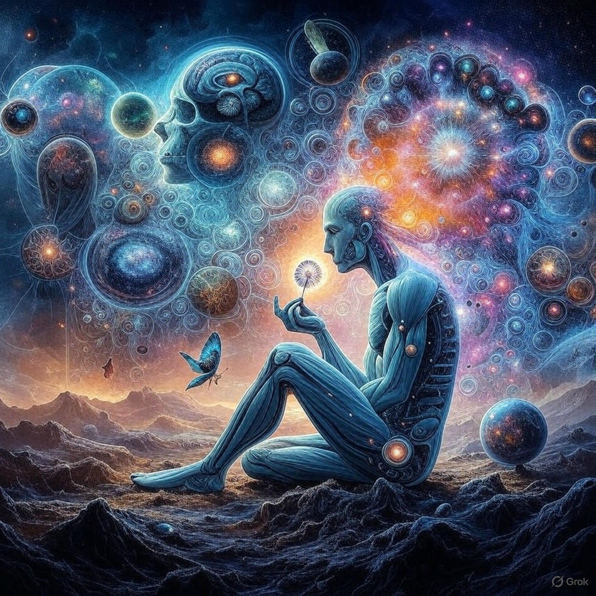

I am a simple page — one that has carried countless stories: of science, of emotion, of dreams. But today, I find myself truly amazed by a single question: How could a tiny, mindless cell have invented something as intricate as DNA?
No mind. No lab. No grand plan. And yet, within that primal silence of the Earth’s earliest days, a cell somehow began to store, pass on, and perfect the code of life. Was it chance? Was it chemistry alone?
Or was there an invisible intelligence at work — a quiet force within nature, crafting with patience and purpose?
I imagine the beginning of life — the Earth silent, still, sacred. In a quiet pond, a bubble forms — the first cell. It cannot speak. It cannot think. Yet it must survive. And slowly, something inside it changes.
It begins to gather information. It begins to organize. Not out of knowledge, but out of need. And unknowingly, it weaves a thread — a code — a miracle. That thread is DNA.
DNA is not merely a molecule. It is a memory. A sacred whisper from the first cell, carrying its wisdom, its fear, and its courage through every generation that followed.
Was this an invention? Or was it a quiet surrender to life’s inner calling? Perhaps that first cell had no idea what it was making. And yet what it made sustains all life today.
Today, I pause — because sometimes, a question is more beautiful than any answer. And this one — “How could a cell have invented DNA?” — is a mystery hidden in the breath of the very first life.?
We Are Just That Cell — And Nothing More
In the beginning, there were no names, no faces, no language, no history. Only silence — deep, vast, and alive. From that silence, a ripple rose... a single cell opened its eyes.
It had no knowledge of its own existence. No goal. No thought. Yet, within it stirred something — life.
That was the first cell. It didn’t invent or plan anything. But over time, a memory awakened within its walls. A line began to form — the code of DNA.
That cell still lives within us. In our laughter, our sorrow, our thoughts, our prayers. Its ancient pulse still echoes in every part of our being.
We believe we are many things — but when all else fades away, only one truth remains: We are just that cell — and nothing more.
And perhaps, that is enough. Because within that one cell lies the entire story of the universe.
Life never asked us for anything — it only wanted us to feel, to live, to simply be — as we were in the beginning.
How DNA Builds the Body – A Silent Architect
Imagine a blueprint so detailed, so vast, that it can create an entire human body — bones, skin, blood, organs, brain, breath. Now imagine this blueprint isn’t stored in a computer, or designed by an engineer... but quietly folded inside every cell of your body.
This is DNA — not just a molecule, but a silent architect. It doesn’t speak, yet it instructs. It doesn’t think, yet it designs. It doesn’t move, yet it builds. Within its spiral strands lies the encoded intelligence of life itself — guiding the formation of every part of you, from a single cell to a fully conscious being.
DNA is the invisible thread that connects your body to a deeper intelligence — one that knows how to grow, heal, and adapt without ever being told. It is more than chemistry; it is consciousness folded into code.
From the moment of conception, DNA begins its silent work — deciding the color of your eyes, the strength of your bones, the rhythm of your heartbeat. It orchestrates the symphony of trillions of cells working together — without confusion, without rest.
And yet, DNA does not boast. It remains hidden, humble, and quiet — like a true yogi. It reminds us that the greatest intelligence often works in silence.
Scientists decode it, doctors study it, but its origin — the intelligence behind the code — remains a mystery. Is it random? Or is it divine design?
When we look deeply into DNA, we are not just studying biology — we are witnessing a miracle. A sacred design that hints at a higher purpose, a spiritual intelligence, a cosmic engineer.
DNA is not just the language of life — it is a whisper from the universe, saying: “You are made of intelligence.”
Connecting to Natural Intelligences

The journey to understanding and gaining knowledge starts not by accumulating more data, but by connecting to the natural intelligence that exists within and around us.
This intelligence has always been present — in every cell of our body, in every breath, in every movement of nature. The key is to sync with this intelligence, to allow it to guide us rather than trying to control it.
Through meditation, we can listen to the silent wisdom of the universe. Through spiritual practices, we connect to the deeper, invisible layers of reality. Through nature, we find the perfect example of harmonious intelligence.
Let us stop fighting against the flow and start flowing with it, trusting that the intelligence that built the cosmos is still guiding us, within us.
“True wisdom is not about what we learn, but about what we align with — the intelligence of the universe.”